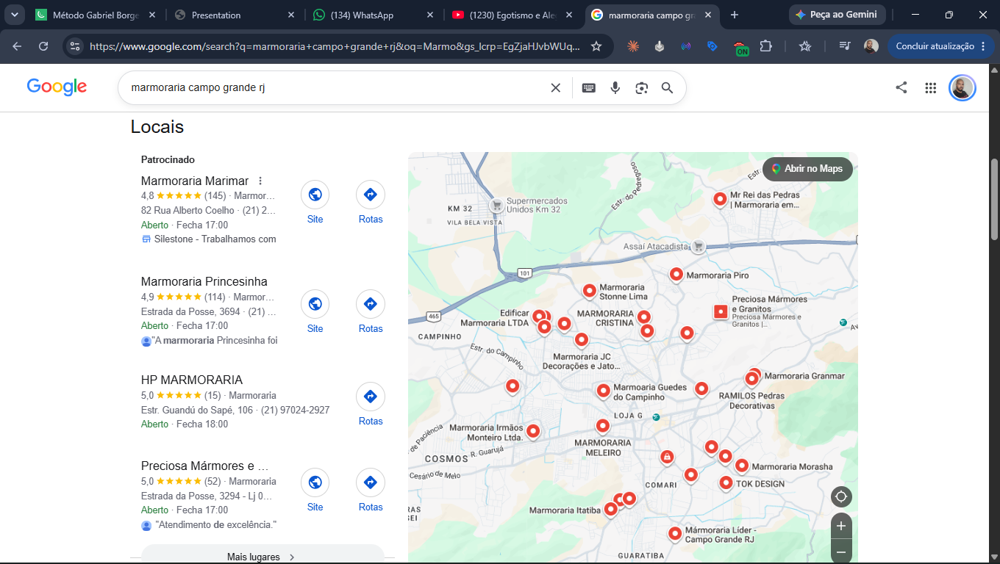
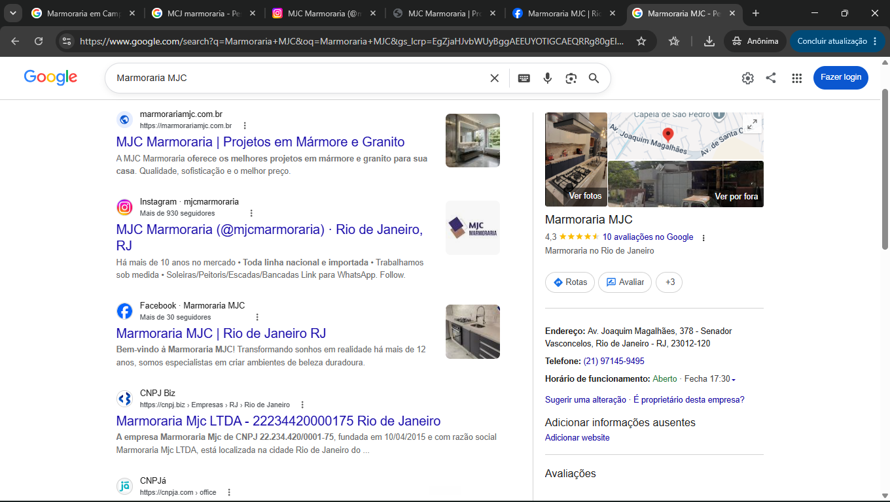
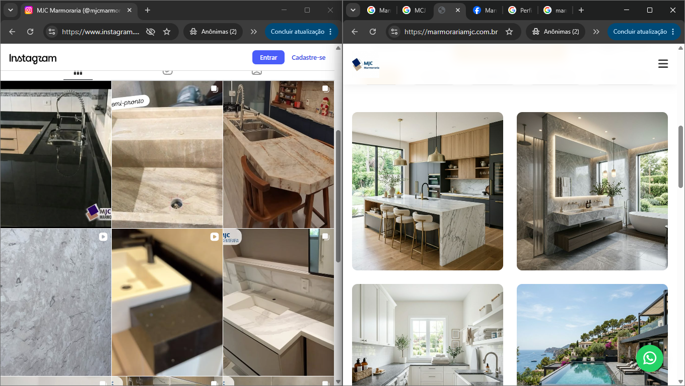

MJC Marmoraria
Esta análise foi feita a partir de informações públicas sobre a presença da MJC Marmoraria na internet, seguindo o mesmo caminho que um cliente faz quando procura uma marmoraria no Google. Nenhum dado interno da empresa foi usado, e tudo o que está aqui pode ser conferido por qualquer pessoa. O resultado principal é que existem pessoas procurando marmoraria em Campo Grande todos os dias e elas estão encontrando os concorrentes da MJC.
A empresa não aparece na busca

A pesquisa foi feita de dentro de Campo Grande, do mesmo jeito que faria um morador do bairro, e apareceram mais de vinte marmorarias: Marimar, Princesinha, HP, Preciosa, Ramilos, Itatiba, Líder, Granmar, Meleiro, Morasha, Cristina, Piro, Guedes, Irmãos Monteiro, Tok Design. A MJC não estava em nenhuma posição da lista. Quando a busca é feita pelo nome da empresa, aí sim ela aparece normalmente, só que isso atende apenas quem já conhece a marmoraria, e o cliente que está reformando a cozinha e nunca ouviu falar da MJC acaba não chegando até ela.
Existe um ponto favorável nisso tudo: na busca por Senador Vasconcelos a MJC aparece em primeiro lugar. O que reduz essa vantagem é que os concorrentes de Campo Grande também aparecem nessa busca, então eles atendem as duas regiões e a MJC atende só a menor delas.
Vale registrar que algumas dessas empresas ainda pagam anúncio para aparecer nessa pesquisa, o que dá uma ideia do quanto essa procura é disputada no bairro.
Quem decide se a empresa entra ou não nessa lista são basicamente duas coisas, o Google Meu Negócio e o site, e é sobre elas que tratam os dois pontos seguintes.
O Google Meu Negócio está incompleto
O Google Meu Negócio da MJC existe, está verificado e tem nota 4,3 com dez avaliações, então o problema não é falta de cadastro. O problema é que ele está praticamente vazio, e o Google só mostra a empresa para quem procura quando sabe o que ela faz.
O campo de serviços, por exemplo, não foi preenchido. Os concorrentes que aparecem no mapa preencheram o deles com escada, lavabo, granito, mármore, entrega e pedra rara, e cada item cadastrado ali é mais uma procura que eles passam a atender. A MJC faz todos esses serviços e não informou nenhum.

O endereço do site também não foi preenchido, tanto que o Google ainda mostra a opção “adicionar website” no perfil da empresa, o que quer dizer que o campo está em branco. A MJC tem site, o Google conhece esse site, mas não sabe que os dois são a mesma empresa. Junto disso está vazio o campo de área de atendimento, que é onde a empresa informa até onde ela entrega e instala. Como isso não foi preenchido, quem procura a partir de outro bairro acaba não encontrando a MJC entre as opções.
Mas o ponto que mais pesa no dia a dia é outro: são seis avaliações sem resposta e duas delas são reclamações. Uma, de uma estrela, diz “desde segunda feira esperando um orçamento, triste esse atendimento”. A outra, de duas estrelas, elogia o atendente pelo nome, confirma que a entrega veio no prazo e reclama do resultado da instalação, com fotos. Nenhuma das duas recebeu resposta, e é isso que o próximo cliente lê antes de escolher, o que passa impressão de descaso mesmo quando não é o caso. Provavelmente é o que segura a nota em 4,3 enquanto os primeiros colocados estão entre 4,8 e 5,0.
A primeira reclamação merece um registro à parte, porque ela mostra outra coisa: já existe cliente chegando até a MJC e ficando sem resposta. Isso não é problema de divulgação, é de atendimento, e foge do que esta análise se propôs a olhar. Vale o registro porque aumentar a procura sem antes organizar a resposta aos pedidos de orçamento tende a gerar mais reclamação do que mais venda.
As avaliações também pararam de chegar, porque tem uma de um mês atrás, a seguinte é de oito meses e as outras passam de um ano, o que mostra que não existe o hábito de pedir avaliação para o cliente que foi bem atendido. Com as fotos acontece a mesma coisa: são vinte imagens boas no Google Meu Negócio, mas a última foi publicada há oito meses, e nesse mesmo período o Instagram recebeu obra nova.
A questão não é estrutura nem reputação
O caso do HP Marmoraria é um bom exemplo, porque ele está em terceiro lugar no mapa, tem quinze avaliações e não tem site, enquanto a MJC tem dez avaliações e tem site. A diferença entre os dois não está no tamanho da empresa nem na qualidade do serviço, está no fato de o Google Meu Negócio dele estar preenchido e o da MJC não.
E é por isso que essa é a parte mais fácil de resolver de todo o material, porque não depende de investimento e leva poucas horas: preencher o campo de serviços com tudo que a marmoraria faz, informar o endereço do site, cadastrar a área de atendimento, subir as fotos de obra que já estão no Instagram e responder as seis avaliações pendentes, começando pelas duas reclamações. A de duas estrelas, inclusive, é das mais simples de responder, porque a própria cliente já reconhece o que deu certo no atendimento e no prazo. Fora isso, criar o hábito de pedir avaliação a cada obra entregue, que é o que faz a nota subir com o tempo e é exatamente onde está a distância para os primeiros colocados.
O site afasta o cliente
A primeira frase que o visitante lê ao abrir o site é “Sofisticação em Mármore com 10% de Desconto à Vista”, logo abaixo vem a promessa das “melhores condições do mercado” e o botão principal diz “Garantir meu desconto”. São três menções a preço antes de a pessoa ver uma única obra da empresa. Só no título as duas ideias já se anulam, porque quem procura sofisticação desconfia do desconto e quem procura preço não se convence pela palavra sofisticação. Se preço competitivo é um ponto forte da MJC, ele está mal aproveitado aí, já que desconto à vista é condição de pagamento que quase toda empresa oferece e não diz nada sobre a empresa ser mais em conta que a concorrência. Fora que preço bom só convence quando vem junto da prova do trabalho, senão o cliente entende barato em vez de vantajoso, e em pedra barato levanta suspeita de material inferior ou acabamento mal feito.
E prova é justamente o que falta. As fotos do site são de banco de imagem, a ponto de uma delas mostrar uma casa com piscina e vista para o mar, que não tem relação nenhuma com o cliente de Campo Grande. O depoimento é assinado por uma cliente de São Paulo, texto que veio no modelo original da página e nunca foi trocado. Enquanto isso o Instagram da MJC tem bancada instalada, cuba, acabamento e obra entregue de verdade, e o Google tem dez avaliações de clientes reais, e nada disso aparece no site. A página também não menciona Campo Grande em momento nenhum.

O contato está resolvido, com botão de WhatsApp fixo na tela, que é o canal onde a maior parte das negociações de obra acontece no Brasil. O que não está resolvido é o que vem antes dele, porque de nada adianta facilitar o contato de quem já não se convenceu pela página.
E nada que acontece no site é acompanhado, já que não há nenhuma ferramenta instalada no site capaz de dizer quantas pessoas entram, de onde elas vêm e quantas clicam para chamar no WhatsApp.
O caminho aqui passa por mostrar a obra antes de falar de preço, trocar as fotos genéricas pelas imagens reais que já existem no Instagram e colocar as avaliações verdadeiras do Google no lugar do depoimento de São Paulo. Se preço competitivo é mesmo um diferencial da MJC, ele merece ser dito de forma direta e comparável, e não como desconto à vista. O resto é mais simples: mencionar Campo Grande nas páginas e instalar as ferramentas de acompanhamento.
O Instagram é o melhor material da empresa e está sozinho
O Instagram tem mais de 930 seguidores e obra publicada, com cozinha, banheiro, escada e acabamento, sendo o melhor conteúdo que a MJC tem hoje. Só que ele não ajuda nenhum dos outros canais: não está no site, não está no Google Meu Negócio, não aparece para quem procura marmoraria, e o link do perfil leva direto para o WhatsApp sem passar pelo site. O Facebook, por sua vez, tem pouco mais de trinta seguidores e está parado, e os dois perfis ainda se contradizem, porque em um está escrito que a empresa tem mais de dez anos e no outro mais de doze. Ligar essas pontas é rápido: colocar o endereço do site no link da bio, publicar no Google Meu Negócio as mesmas obras que já vão para o perfil e acertar o tempo de mercado nos dois lugares.
A empresa também não anuncia hoje no Instagram nem no Facebook, o que não chega a ser um problema, mas é um caminho aberto e sem uso. Dá para mostrar a empresa de novo para quem entrou no site e não fechou negócio, dá para subir a lista de clientes antigos e voltar a falar com quem já comprou, e dá para rodar campanha só para quem mora na região, aproveitando as obras que já estão publicadas no perfil. Para qualquer uma dessas coisas funcionar é preciso, antes, ter as ferramentas de acompanhamento instaladas no site, porque são elas que registram quem visitou a página e permitem apresentar o anúncio depois.
Por onde começar
As correções apontadas ao longo do material podem ser feitas em quatro etapas. Primeiro o Google Meu Negócio, que não custa nada, leva poucas horas e é onde o resultado aparece mais rápido. Depois o site, que é um trabalho maior porque envolve texto, foto e a forma de apresentar o preço, e junto dele a instalação das ferramentas de acompanhamento, que precisa estar pronta antes de qualquer valor colocado em anúncio. Por último entra o anúncio, que coloca a MJC na frente de quem está procurando agora enquanto as outras frentes ganham posição.
Nada disso exige recomeçar do zero, porque o trabalho existe, as fotos existem, os clientes satisfeitos existem e o site já está no ar. O que falta é juntar esses pedaços e deixar claro para o Google o que a MJC faz, porque enquanto isso não acontece quem procura marmoraria em Campo Grande continua entrando em contato com os concorrentes.